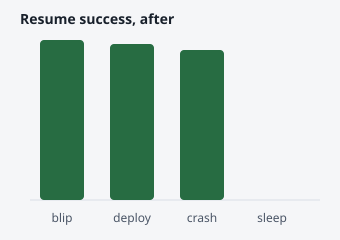
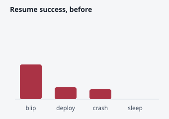

Three changes are in flight. Nothing is ready to merge; one owner decision blocks the
selector work.
Resume now completes the session it restores. Verification needs one live debug window.
The remote selection contract needs an owner decision before the child PR can go up.
## The registry at a glance
Redis, shared across gateways.Calls resume on reconnect.Sends its session id.
## The change, file by file
Compare-and-set on the version stops two tabs resuming the same session.The loser sees a miss; logs cannot tell it from an expired session.New store method; Redis implements it with WATCH/MULTI.
## Evidence in pictures

After the change, deploys and crashes resume like blips.

The design family on a whiteboard
Hand-placed boxes inside a board: drag to pan, pinch or ctrl-scroll to zoom, hover a box to
trace its arrows.
Authorized outcome and boundary.Entities, invariants and obligations.Owners, interfaces and proof seams.Scenario, real interaction, oracle.Reference, route, observation.
Start with what must be true.Then who owns what.Finally, how we will know.
## Resume, one step at a time
The client reconnects and sends its session id.The gateway calls resume.The registry reads the session and checks its version.The binder attaches the new socket.Finally the publisher announces the resumed session.